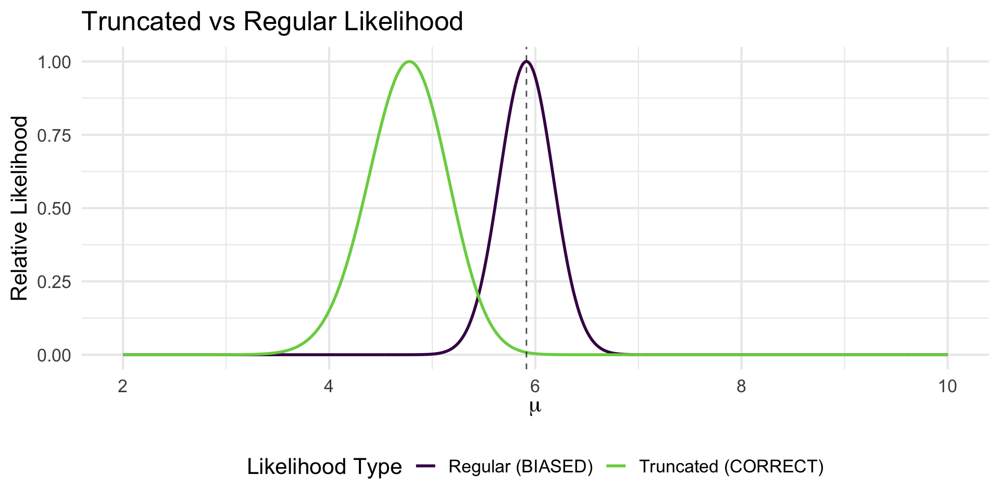

Loading required package: viridisLiteLecture 02: Heritability, segregation, and the gene-mapping toolkit
PUBH 8878, Statistical Genetics
Aggregation, heritability, and segregation analyses
- Aggregation/heritability analyses: Investigating patterns of phenotypic correlation between relatives
- Segregation analysis: Finding support for a specific genetic model underlying inheritance patterns
Note
These analysis do not always use molecular genetic data… so why should we care?

A gap in estimation
- Aggregation and heritability analyses tend to have much higher heritability estimates of traits than genotyping methods
- Understanding these models may help explain this delta
Big picture
- Pattern: relatives resemble each other.
- Quantity: convert resemblance into h^2 (variance components).
- Mechanism: test explicit inheritance models with segregation likelihoods.
- What next? Choose linkage vs association studies (details next week).
Recurrence risk ratios (λ)
Let K be population prevalence for a binary trait. For relatives of type R: \lambda_R \;=\; \frac{\Pr(\text{case} \mid \text{has affected relative of type } R)}{K}.
- \lambda_R>1 indicates familial aggregation.
- Interpretable but descriptive: does not separate genes from shared environment.
From \lambda to h^2 (siblings)
On the liability scale, the sibling correlation can be decomposed as r_{\text{sib}} \approx \tfrac12 A + \tfrac14 D + C, where A=\sigma_A^2/\sigma_L^2 (additive), D=\sigma_D^2/\sigma_L^2 (dominance), and C=\sigma_C^2/\sigma_L^2 (shared environment).
Under additive-only genetics $ (D=0, C=0) :$ r_{} h^2 h^2 . $$
Heritability definitions
Let Y=G+E with independent G,E. Total variance: \sigma_Y^2=\sigma_G^2+\sigma_E^2.
- Broad-sense H^2=\sigma_G^2/\sigma_Y^2 (all genetic effects).
- Narrow-sense h^2=\sigma_A^2/\sigma_Y^2 (additive effects only).
Important: h^2 is population- and environment-specific, not a trait constant.
One-locus algebra (Fisher decomposition)
Let a biallelic locus have allele A with frequency p (q=1-p). Let X\in\{0,1,2\} be the count of A. Then E[X]=2p, \operatorname{Var}(X)=2pq.
Using Fisher’s parameterization with average effect \alpha and dominance deviation d: V_A = 2pq\,\alpha^2,\qquad \alpha = a + d(q-p),\qquad V_D = (2pq\,d)^2.
For many loci, variances add: V_A=\sum_m 2p_mq_m\alpha_m^2, V_D=\sum_m (2p_mq_m d_m)^2.
Estimating h^2 from relatives
Parent–offspring regression
Regress offspring on mid-parent: Y_o = \beta_0 + \beta_1 \cdot \tfrac{Y_{p1}+Y_{p2}}{2} + \varepsilon,\quad \beta_1 \approx h^2.
Twins
Estimate correlations r_{\text{MZ}}, r_{\text{DZ}}. \hat h^2 \approx 2\,(r_{\text{MZ}} - r_{\text{DZ}})\quad\text{(Falconer)}.
Assumptions to monitor: equal environments for MZ/DZ, random mating, no gene–environment correlation, reliable measurement.
Segregation analysis: model-based mechanism testing
Parameters \boldsymbol{\psi}=(p, f_{AA}, f_{Aa}, f_{aa}, x)
- p: disease-allele frequency
- f_g: penetrance by genotype
- x: phenocopy rate
Pedigree likelihood (phenotypes \mathbf Y, latent genotypes \mathbf G): L(\boldsymbol{\psi})=\sum_{\mathbf G}\;\prod_i \Pr(Y_i \mid G_i;\boldsymbol{\psi})\;\Pr(\mathbf G \mid p).
- Ascertainment correction: divide by \Pr(\text{family ascertained}\mid\boldsymbol{\psi}).
- Model comparison: LRT or LOD vs a sporadic model.
Choosing a mapping strategy (conceptual bridge)
- Strong major-gene signal: large \lambda_{\text{sib}}, high h^2, segregation fits with high penetrance ⇒ linkage in families is powerful.
- Polygenic architecture: moderate \lambda_{\text{sib}}/h^2, weak single-locus fit ⇒ association in populations is preferable.
Worked example (chalk/board)
Given K=1\%, t=\Phi^{-1}(0.99)\approx 2.326, \phi(t)\approx 0.026, i\approx 0.026/0.01=2.6.
If \lambda_{\text{sib}}=3, then under additive-only LTM:
h^2 \approx \frac{2(3-1)}{2.6^2} \approx \frac{4}{6.76} \approx 0.59.
Summary
- \lambda_R captures familial aggregation; LTM turns it into parameters.
- h^2 partitions variance into additive vs other components.
- Segregation analysis tests explicit inheritance models via likelihoods.
- These results inform whether to pursue linkage or association next.
Likelihood & Maximum Likelihood in Statistical Genetics
Learning objectives
By the end, you should be able to:
- Explain likelihood vs. probability in one sentence
- Write a likelihood for simple models (Normal, regression)
- Derive/interpret the MLE & its asymptotic properties
- Recognize ignorable vs. non‑ignorable selection
- Set up a genomic mixed model likelihood and define h_g^2
Likelihood ≠ Probability
- Probability: given a fixed parameter, what is the chance of the data?
p(y\mid \theta)
- Likelihood: given fixed data, how plausible is a parameter value?
L(\theta\mid y) \propto p(y\mid \theta)
- We maximize likelihood over \theta to get the MLE \hat{\theta}
Toy example (Normal mean, known variance)
Data: y=(11.8, 6.1, 7.1, 11.1, 5.8), \sigma^2=2
L(\mu\mid y)\;\propto\; \exp\Big\{-\tfrac{1}{2\sigma^2}\sum_i (y_i-\mu)^2\Big\}
Maximizer: \hat\mu = \bar y = 8.38
Toy example (Normal mean, known variance)
y <- c(11.8, 6.1, 7.1, 11.1, 5.8)
s2 <- 2
mu <- seq(4, 14, by = .01)
logL <- sapply(mu, function(m) -sum((y - m)^2) / (2 * s2))
likelihood_data <- data.frame(mu = mu, relative_L = exp(logL - max(logL)))
ggplot(likelihood_data, aes(x = mu, y = relative_L)) +
geom_line() +
geom_vline(xintercept = mean(y), linetype = "dashed") +
labs(x = expression(mu), y = "Relative L") +
theme_minimal()Loglikelihood, score, information
- Loglikelihood: \ell(\theta\mid y) = \sum_i \log p(y_i\mid \theta)
- Score: S(\theta) = \partial \ell/\partial \theta (zero at interior maximum)
- Observed information: I(\theta\mid y) = -\partial^2\ell/\partial\theta\partial\theta^\top
- Expected information (Fisher): i(\theta) = \mathbb E[I(\theta\mid Y)]
As n\to\infty:
\hat\theta \overset{approx}{\sim} \mathcal N(\theta_0,\; i(\theta_0)^{-1}) (standard errors from i^{-1}).
Three must‑know ML facts
- Consistency (\hat\theta\to\theta_0) & asymptotic normality
- Cramér–Rao lower bound: asymptotically, MLE attains the best possible variance
- Invariance: the MLE of g(\theta) is g(\hat\theta)
Warning
- Non‑unique or boundary solutions; flat likelihoods
- Slow/failed convergence to local maxima in multi‑parameter models
- Asymptotics can misbehave at boundaries or with small n
Example 1 — Linear regression as a likelihood
Model (offspring on mid‑parent): y_i = \beta_0 + \beta_1 x_i + e_i, e_i\sim\mathcal N(0,\sigma^2).
- Likelihood \Rightarrow loglikelihood
\ell(\beta_0,\beta_1,\sigma^2) = -\tfrac{n}{2}\log\sigma^2 - \tfrac{1}{2\sigma^2}\sum_i (y_i-\beta_0-\beta_1 x_i)^2 + C
- MLEs: OLS solutions for \beta, and \hat\sigma^2 = \tfrac{1}{n}\sum \hat e_i^2
- In genetics, \beta_1 can estimate heritability from parent–offspring regression (with caveats)
What if errors are correlated? Enter GLS
Problem: Family members share environments: \text{Cov}(e_i, e_j) \neq 0 for relatives
OLS assumption violated: \mathbb{E}[ee^\top] = \sigma^2 I no longer holds
Correct model: y = X\beta + e where e \sim \mathcal{N}(0, \Sigma) and \Sigma_{ij} = \text{Cov}(e_i, e_j)
Generalized Least Squares (GLS) solution: \hat{\beta}_{\text{GLS}} = (X^\top \Sigma^{-1} X)^{-1} X^\top \Sigma^{-1} y
Why this matters: - OLS gives \mathbb{E}[\hat{\beta}_{\text{OLS}}] = \beta (still unbiased) - But \text{Var}(\hat{\beta}_{\text{OLS}}) > \text{Var}(\hat{\beta}_{\text{GLS}}) (inefficient) - Standard errors from OLS are wrong: invalid inference
Example 2 — Transformations & invariance
If X\sim\mathcal N(\mu,1) and Y=\exp(X), then Y is log‑Normal: p_Y(y)=\frac{1}{y\sqrt{2\pi}}\exp\{-\tfrac{1}{2}(\log y - \mu)^2\}
Invariance: MLE of \mu from Y equals the MLE from \log Y using the Normal likelihood.
Statistical genetics application: Why log-transform is OK
Common scenario: Gene expression levels, protein concentrations, or allele frequencies often follow log-normal distributions due to multiplicative biological processes.
Example: If fold-change in gene expression Y = \exp(X) where X \sim \mathcal{N}(\mu, \sigma^2), then: - Direct analysis of Y requires complex log-normal likelihood - Log-transformation: Analyze \log Y = X with simple normal likelihood - By invariance: \hat{\mu} from log-normal analysis of Y = \hat{\mu} from normal analysis of \log Y
Why this matters: Log-transformation linearizes multiplicative genetic effects, stabilizes variance across expression levels, and makes standard linear models (ANOVA, regression) appropriate for GWAS and eQTL analysis.
Example 3 — Selection that’s ignorable (ascertainment in families)
Family studies often ascertain through probands with extreme phenotypes. Consider blood pressure measurements in families where: - All siblings have baseline BP measured: y_{i1} = \mu + g_i + e_{i1} - Only siblings with high baseline BP (y_{i1} > c) get follow-up: y_{i2} = \mu + \delta + g_i + e_{i2}
Here g_i \sim \mathcal{N}(0, \sigma_g^2) represents genetic effects, errors are \mathcal{N}(0, \sigma_e^2).
The profound insight: While selection obviously biases estimates of \mu, it is ignorable for estimating \delta (treatment effect) because:
P(y_{i2} \mid y_{i1}, \text{selected}) = P(y_{i2} \mid y_{i1})
Why this matters: When you condition on the selection variable (y_{i1}), the selection mechanism becomes irrelevant for estimating \delta. The conditional likelihood P(y_2 \mid y_1) gives unbiased estimates even though P(y_1) is heavily biased.
Clinical/genetic relevance: In family studies with extreme proband ascertainment, you can still get unbiased estimates of heritability, treatment effects, and gene-environment interactions by properly conditioning on the ascertainment phenotype.
Example 3 — Selection that’s ignorable (ascertainment in families)
`geom_smooth()` using formula = 'y ~ x'Warning: Removed 488 rows containing missing values or values outside the scale range
(`geom_point()`).Example 3 — Selection that’s ignorable (ascertainment in families)

Example 4 — Truncation (non‑ignorable)
If you only observe Y when Y>T, you must use the truncated density: p(y\mid Y>T,\theta) = \dfrac{p(y\mid\theta)}{1-F(T\mid\theta)},\quad y>T
- Likelihood multiplies the usual density by a normalizing factor
- Estimators from the untruncated likelihood are biased
- Solutions: EM, numerical ML, or Bayesian methods
Example 4 — Truncation (non‑ignorable)
set.seed(1234)
regular_loglik <- function(mu, sigma, y) {
sum(dnorm(y, mu, sigma, log = TRUE))
}
truncated_loglik <- function(mu, sigma, y, T) {
sum(dnorm(y, mu, sigma, log = TRUE)) - length(y) * log(1 - pnorm(T, mu, sigma))
}
# Data: only observe values > T=4 (left truncation)
mu <- 5
sigma <- 2
T <- 4
y <- rnorm(100, mean = mu, sd = sigma)
y <- y[y > T]
mu_grid <- seq(2, 10, by = 0.01)
# Calculate both likelihoods
logL_regular <- sapply(mu_grid, function(m) regular_loglik(m, sigma, y))
logL_truncated <- sapply(mu_grid, function(m) truncated_loglik(m, sigma, y, T))
# Create comparison data
likelihood_data <- data.frame(
mu = rep(mu_grid, 2),
relative_L = c(
exp(logL_regular - max(logL_regular)),
exp(logL_truncated - max(logL_truncated))
),
type = rep(c("Regular (BIASED)", "Truncated (CORRECT)"), each = length(mu_grid))
)
# Plot comparison
ggplot(likelihood_data, aes(x = mu, y = relative_L, color = type)) +
geom_line(linewidth = 1) +
geom_vline(xintercept = mean(y), linetype = "dashed", alpha = 0.7) +
labs(
x = expression(mu), y = "Relative Likelihood",
color = "Likelihood Type",
title = "Truncated vs Regular Likelihood"
) +
theme_minimal(base_size = 16) +
theme(legend.position = "bottom") +
scale_color_viridis_d(end = .8)Example 4 — Truncation (non‑ignorable)
Example 4 - Truncation (non‑ignorable)
Summary & key takeaways
- Likelihood is your modeling workhorse; MLEs are asymptotically efficient
- Account for the data collection mechanism (ignorable vs non‑ignorable)
- Genomic models are just Gaussian hierarchies with a clever covariance
- When in doubt, simulate to check intuition